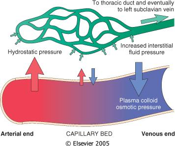
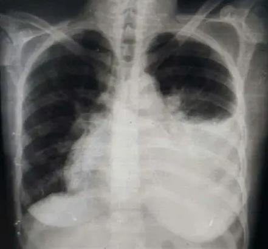
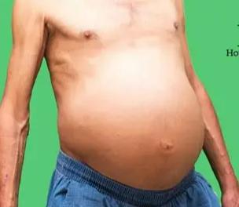
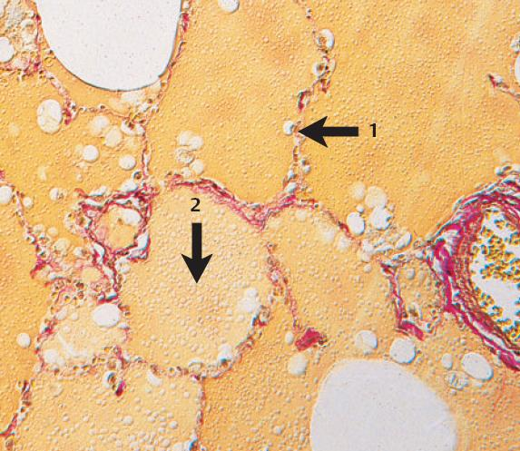
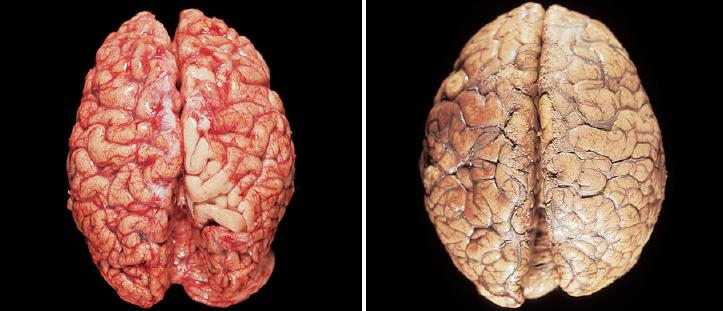
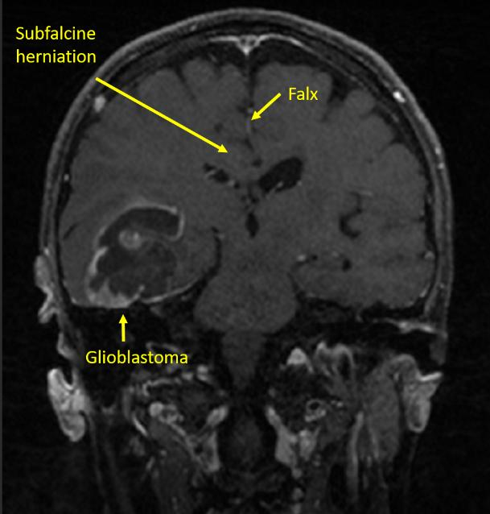

1.7Edema — Starling Forces and the Physiology of Leakageادم — نیروهای استارلینگ و فیزیولوژی نشت مایع
Definitionتعریف
Edema is an increase in fluid within the interstitial tissue spaces, or within body cavities. It is an extravascular accumulation — the water has left the vessel; the blood cells have not.ادم عبارت است از افزایش مایع در فضاهای بینابینی بافت یا در حفرات بدن. این یک تجمع خارجعروقی است — آب از رگ خارج شده اما سلولهای خونی نه.

Fig 1.12 Starling forces across a capillary. Hydrostatic pressure (red arrow) pushes fluid out and falls from the arterial to the venous end; plasma colloid osmotic pressure (blue arrow) pulls fluid in and is nearly constant. Net filtration occurs at the arterial end, net reabsorption at the venous end, and the small unabsorbed surplus is removed by lymphatics.نیروهای استارلینگ در عرض مویرگ. فشار هیدروستاتیک (پیکان قرمز) مایع را به بیرون میراند و از سمت شریانی به وریدی افت میکند؛ فشار اسمزی کلوئیدی پلاسما (پیکان آبی) مایع را به داخل میکشد و تقریباً ثابت است. فیلتراسیون خالص در سمت شریانی و بازجذب خالص در سمت وریدی رخ میدهد و مازاد کوچکِ جذبنشده توسط لنفاتیکها برداشته میشود.
Roughly 60% of body weight is water, and about two-thirds of that is intracellular. Edema concerns the remaining extracellular compartment, and specifically the balance between its two sub-compartments — plasma (inside the vessel) and interstitium (outside it). The wall of the capillary is freely permeable to water and small solutes but relatively impermeable to plasma proteins. Movement of fluid across that wall is governed by four Starling forces:حدود ۶۰ درصد وزن بدن آب است و تقریباً دو سوم آن داخل سلولی است. ادم به بخش خارجسلولی باقیمانده مربوط میشود و بهطور خاص به تعادل بین دو زیربخش آن — پلاسما (داخل رگ) و فضای بینابینی (خارج رگ). دیوارهٔ مویرگ به آب و املاح کوچک کاملاً نفوذپذیر است اما به پروتئینهای پلاسما نسبتاً نفوذناپذیر. حرکت مایع از این دیواره را چهار نیروی استارلینگ تعیین میکند:
Table 1.3 The four Starling forcesجدول ۱.۳ — چهار نیروی استارلینگ
The blood pressure inside the capillary. ~32 mmHg at the arterial end, ~12 mmHg at the venous end. The force most often deranged in disease.فشار خون داخل مویرگ؛ حدود ۳۲ میلیمتر جیوه در سمت شریانی و حدود ۱۲ در سمت وریدی. نیرویی که بیش از همه در بیماریها مختل میشود.
Generated almost entirely by albumin, which is too large to cross. ~25 mmHg, essentially constant along the capillary.تقریباً بهطور کامل توسط آلبومین ایجاد میشود که برای عبور خیلی بزرگ است؛ حدود ۲۵ میلیمتر جیوه و در طول مویرگ تقریباً ثابت.
Normally near zero or slightly negative; rises as the interstitium fills, which is a natural brake on further edema.معمولاً نزدیک صفر یا اندکی منفی؛ با پرشدن فضای بینابینی بالا میرود و ترمزی طبیعی بر ادم بیشتر است.
Normally low, because lymphatics continuously remove the few proteins that escape. Rises sharply in inflammation and in lymphatic obstruction.معمولاً پایین، چون لنفاتیکها پیوسته پروتئینهای اندکِ نشتیافته را برمیدارند. در التهاب و انسداد لنفاوی بهشدت بالا میرود.
Net filtration = Kf × [ (Pc − Pi) − σ(πc − πi) ] →edema whenever this exceeds what the lymphatics can carry away
In health there is a small net filtration of fluid into the interstitium — roughly 2–4 litres per day across the whole body — and the lymphatic system returns exactly that amount to the circulation via the thoracic duct. Edema therefore requires one of two things: an increase in filtration that exceeds lymphatic capacity, or a failure of lymphatic drainage. The lymphatics can up-regulate their flow perhaps tenfold, which is why modest increases in capillary pressure produce no visible edema at all.در حالت سلامت، مقدار کمی فیلتراسیون خالص به فضای بینابینی وجود دارد — تقریباً ۲ تا ۴ لیتر در روز در کل بدن — و سامانهٔ لنفاوی دقیقاً همین مقدار را از طریق مجرای توراسیک به گردش خون بازمیگرداند. بنابراین ادم به یکی از این دو نیاز دارد: افزایش فیلتراسیون فراتر از ظرفیت لنفاوی، یا نارسایی تخلیهٔ لنفاوی. لنفاتیکها میتوانند جریان خود را شاید تا ده برابر بالا ببرند و به همین دلیل افزایشهای خفیف فشار مویرگی هیچ ادم قابلمشاهدهای ایجاد نمیکنند.
High-Yieldنکتهٔ کلیدی
Every cause of edema you will ever be asked about works by altering exactly one of four variables: ↑Pc, ↓πc, ↑lymphatic resistance, or ↑capillary permeability (which raises πi by letting protein out). Sodium retention is best understood as a mechanism that raises Pc by expanding plasma volume. If you can classify a scenario into one of these four, you have answered the question.هر علت ادمی که تا به حال از شما پرسیده شده، دقیقاً با تغییر یکی از این چهار متغیر عمل میکند: افزایش فشار هیدروستاتیک مویرگ، کاهش فشار انکوتیک پلاسما، افزایش مقاومت لنفاوی، یا افزایش نفوذپذیری مویرگ (که با خروج پروتئین، فشار انکوتیک بینابینی را بالا میبرد). احتباس سدیم را بهتر است مکانیسمی بدانید که با افزایش حجم پلاسما فشار هیدروستاتیک را بالا میبرد. اگر بتوانید یک سناریو را در یکی از این چهار دسته جا دهید، به سؤال پاسخ دادهاید.
1.8The Four Mechanisms of Non-inflammatory Edemaچهار مکانیسم ادم غیرالتهابی
① Increased hydrostatic pressure① افزایش فشار هیدروستاتیک
Anything that impedes venous return raises Pc upstream of the obstruction.هر چیزی که بازگشت وریدی را مختل کند، فشار هیدروستاتیک مویرگی بالادست انسداد را بالا میبرد.
Local: deep vein thrombosis → unilateral leg edema; constrictive pericarditis; a tumour compressing a vein; prolonged standing or immobility.موضعی: ترومبوز ورید عمقی ← ادم یکطرفهٔ ساق؛ پریکاردیت فشارنده؛ فشار تومور بر ورید؛ ایستادن طولانی یا بیحرکتی.
Generalised: congestive heart failure — the single commonest cause of edema in clinical practice.منتشر: نارسایی احتقانی قلب — شایعترین علت واحد ادم در طبابت بالینی.
Fig 1.13 Why heart failure and renal failure both end in edema. Note the two arms in heart failure: the mechanical arm (↑hydrostatic pressure) and the neurohormonal arm (renin–angiotensin–aldosterone → Na⁺ and water retention → ↑plasma volume → further ↑hydrostatic pressure). The second arm is the reason a failing heart produces far more edema than the pump defect alone would predict.چرا نارسایی قلب و نارسایی کلیه هر دو به ادم ختم میشوند. به دو شاخه در نارسایی قلب توجه کنید: شاخهٔ مکانیکی (افزایش فشار هیدروستاتیک) و شاخهٔ نوروهورمونال (رنین–آنژیوتانسین–آلدوسترون ← احتباس سدیم و آب ← افزایش حجم پلاسما ← افزایش بیشتر فشار هیدروستاتیک). شاخهٔ دوم دلیل آن است که قلب نارسا بسیار بیشتر از آنچه صرفاً نقص پمپ پیشبینی میکند ادم ایجاد میکند.
Mechanism — the vicious circle of edema in congestive heart failureمکانیسم — چرخهٔ معیوب ادم در نارسایی احتقانی قلب
Cardiac output falls because the ventricle cannot eject effectively.This is the primary defect; everything downstream is compensation or consequence.برونده قلبی کاهش مییابد چون بطن نمیتواند بهخوبی خون را بیرون براند.این نقص اولیه است؛ هر چه پس از آن میآید یا جبران است یا پیامد.
Blood dams up behind the ventricle, raising venous and hence capillary hydrostatic pressure. Fluid begins to filter into the interstitium.The Starling balance is tipped outward by the raised Pc.خون پشت بطن انباشته میشود و فشار وریدی و در نتیجه هیدروستاتیک مویرگی بالا میرود؛ مایع شروع به فیلتر شدن به فضای بینابینی میکند.تعادل استارلینگ با بالا رفتن فشار هیدروستاتیک به سمت بیرون منحرف میشود.
Renal perfusion falls, because cardiac output is low and because fluid has moved out of the vascular compartment.The kidney senses arterial underfilling, not total body water; it cannot distinguish "not enough blood" from "blood in the wrong compartment".پرفیوژن کلیه کم میشود، هم بهدلیل برونده پایین و هم چون مایع از فضای عروقی خارج شده است.کلیه «کمپُری شریانی» را حس میکند نه کل آب بدن؛ نمیتواند «خون ناکافی» را از «خون در فضای اشتباه» تشخیص دهد.
The juxtaglomerular apparatus releases renin → angiotensin I → angiotensin II (via ACE) → aldosterone; ADH is also released.This is the body's standard response to perceived hypovolaemia — retain salt and water to restore circulating volume.دستگاه مجاور گلومرولی رنین آزاد میکند ← آنژیوتانسین I ← آنژیوتانسین II (با آنزیم مبدل) ← آلدوسترون؛ هورمون ضدادراری نیز ترشح میشود.این پاسخ استاندارد بدن به هیپوولمی ادراکشده است: نگهداشتن نمک و آب برای بازگرداندن حجم در گردش.
The kidney retains sodium and water, expanding plasma volume.Aldosterone drives Na⁺ reabsorption in the distal nephron; water follows osmotically, assisted by ADH-driven aquaporin insertion.کلیه سدیم و آب را نگه میدارد و حجم پلاسما را افزایش میدهد.آلدوسترون بازجذب سدیم را در نفرون دیستال هدایت میکند؛ آب بهصورت اسمزی و با کمک قرارگرفتن آکواپورینها تحت اثر هورمون ضدادراری دنبال آن میآید.
But the heart still cannot pump the extra volume, so the added fluid simply raises venous pressure further.Expanding the volume in front of a broken pump does not improve forward flow; it only increases the pressure behind it. This is the vicious circle.اما قلب همچنان نمیتواند این حجم اضافه را پمپ کند، پس مایع افزوده صرفاً فشار وریدی را بیشتر بالا میبرد.افزایش حجم در مقابل پمپ خراب جریان رو به جلو را بهتر نمیکند؛ فقط فشار پشت آن را بالا میبرد. این همان چرخهٔ معیوب است.
Edema worsens, arterial underfilling persists, renin release continues.The compensation is now the disease. This is exactly why diuretics and ACE inhibitors — which interrupt steps 4–5 — are cornerstone treatments in heart failure.ادم بدتر میشود، کمپُری شریانی ادامه مییابد و ترشح رنین برقرار میماند.اکنون خودِ سازوکار جبرانی به بیماری تبدیل شده است. دقیقاً به همین دلیل دیورتیکها و مهارکنندههای آنزیم مبدل — که گامهای ۴ و ۵ را قطع میکنند — سنگبنای درمان نارسایی قلباند.
Progressive, dependent, pitting edema with raised jugular venous pressure, hepatomegaly and — eventually — ascites and anasarca.ادم پیشرونده، وابسته به وضعیت بدن و گودافتادنی، همراه با افزایش فشار ورید ژوگولار، بزرگی کبد و سرانجام آسیت و آناسارکا.
② Reduced plasma oncotic pressure (hypoalbuminaemia)② کاهش فشار انکوتیک پلاسما (هیپوآلبومینمی)
Albumin is the molecule that holds water inside the vessel. When serum albumin falls below roughly 2.5 g/dL, the inward oncotic pull is no longer sufficient to balance even a normal hydrostatic pressure, and fluid leaves the circulation everywhere at once. The result is generalised edema, most obvious where tissues are loose — periorbital, scrotal, and eventually anasarca.آلبومین مولکولی است که آب را داخل رگ نگه میدارد. وقتی آلبومین سرم به زیر حدود ۲.۵ گرم در دسیلیتر برسد، کشش انکوتیک رو به داخل دیگر حتی برای تعادل با فشار هیدروستاتیک طبیعی کافی نیست و مایع همزمان در همهجا از گردش خون خارج میشود. نتیجه، ادم منتشر است که در بافتهای شل بیشتر نمایان میشود — اطراف چشم، اسکروتوم و سرانجام آناسارکا.
Excessive loss — nephrotic syndrome: damaged glomerular capillary walls leak albumin into the urine (>3.5 g/day). The classic presentation is periorbital edema worst on waking.دفع بیش از حد — سندرم نفروتیک: دیوارهٔ آسیبدیدهٔ مویرگ گلومرولی آلبومین را به ادرار نشت میدهد (بیش از ۳.۵ گرم در روز). تظاهر کلاسیک، ادم اطراف چشم است که هنگام بیدارشدن شدیدتر است.
Reduced synthesis — cirrhosis (the diseased liver cannot make albumin) and protein malnutrition (kwashiorkor: no substrate to make it from). The protuberant abdomen of a child with kwashiorkor is ascites on a background of muscle wasting.کاهش ساخت — سیروز (کبد بیمار نمیتواند آلبومین بسازد) و سوءتغذیهٔ پروتئینی (کواشیورکور: مادهٔ اولیهای برای ساخت وجود ندارد). شکم برآمدهٔ کودک مبتلا به کواشیورکور، آسیت بر زمینهٔ تحلیل عضلانی است.
Protein-losing enteropathy — albumin is lost across a diseased gut mucosa.انتروپاتی با دفع پروتئین — آلبومین از مخاط رودهٔ بیمار از دست میرود.
The circle closes here too. Loss of albumin reduces intravascular volume → renal hypoperfusion → renin–angiotensin–aldosterone activation → salt and water retention. But the retained fluid cannot be held in the vessel either, because albumin is still low. So it too leaks out, worsening the edema without correcting the underlying deficit.اینجا هم چرخه بسته میشود. از دست رفتن آلبومین حجم داخل عروقی را کم میکند ← کمخونرسانی کلیه ← فعالشدن رنین–آنژیوتانسین–آلدوسترون ← احتباس نمک و آب. اما مایع نگهداشتهشده هم نمیتواند داخل رگ بماند، چون آلبومین همچنان پایین است. پس آن هم نشت میکند و ادم را بدتر میکند بدون آنکه کمبود زمینهای را اصلاح کند.
③ Lymphatic obstruction — lymphedema③ انسداد لنفاوی — لنفادم
Here filtration is normal but drainage has failed. Because the lymphatics are also the route by which escaped plasma protein is returned to the blood, obstruction causes protein to accumulate in the interstitium. That raises interstitial oncotic pressure (πi), which pulls yet more water out — so lymphedema is self-perpetuating and protein-rich, which is why it becomes firm and non-pitting over time rather than staying soft.اینجا فیلتراسیون طبیعی است اما تخلیه شکست خورده. چون لنفاتیکها مسیر بازگشت پروتئین نشتیافته به خون نیز هستند، انسداد باعث تجمع پروتئین در فضای بینابینی میشود. این فشار انکوتیک بینابینی را بالا میبرد و آب بیشتری بیرون میکشد — پس لنفادم خودتداومبخش و پُرپروتئین است و به همین دلیل با گذشت زمان بهجای نرم ماندن، سفت و بدون گودافتادگی میشود.
Surgical — axillary lymph node dissection in breast cancer surgery; classic cause of arm lymphedema.جراحی — برداشتن غدد لنفاوی زیربغل در جراحی سرطان پستان؛ علت کلاسیک لنفادم بازو.
Neoplastic — tumour infiltrating lymphatic channels or nodes. In breast carcinoma, dermal lymphatic invasion tethers the skin and produces the dimpled peau d'orange ("orange peel") appearance — the skin is edematous but remains anchored at the hair follicles, which therefore appear as pits.نئوپلاستیک — ارتشاح تومور به مجاری یا غدد لنفاوی. در کارسینوم پستان، تهاجم به لنفاتیکهای درم پوست را به عمق میکشد و نمای فرورفتهٔ پوست پرتقالی ایجاد میکند — پوست ادماتو است اما در محل فولیکولهای مو لنگر انداخته و همانها به شکل گودی دیده میشوند.
Post-radiation fibrosis; post-inflammatory scarring and thrombosis of lymphatics.فیبروز پس از پرتودرمانی؛ اسکار و ترومبوز لنفاتیکها پس از التهاب.
Filariasis — Wuchereria bancrofti. Adult nematodes live in and obstruct lymphatic channels, provoking fibrosing inflammation of inguinal nodes and lymphatics. Massive chronic lymphedema of the leg and scrotum with thickened, verrucous skin is elephantiasis.فیلاریازیس — ووکرریا بانکروفتی. کرمهای بالغ در مجاری لنفاوی زندگی کرده و آنها را مسدود میکنند و التهاب فیبروزان غدد و عروق لنفاوی کشالهٔ ران ایجاد مینمایند. لنفادم مزمن عظیم ساق و اسکروتوم همراه با پوست ضخیم و زگیلمانند، الفانتیازیس نام دارد.
Milroy disease — primary congenital lymphedema from agenesis or hypoplasia of lymphatics.بیماری میلروی — لنفادم مادرزادی اولیه ناشی از فقدان یا هیپوپلازی لنفاتیکها.
If obstructed lymphatics rupture, milky lymph accumulates in cavities: chylous ascites, chylothorax, chylopericardium.اگر لنفاتیکهای مسدود پاره شوند، لنف شیریرنگ در حفرات جمع میشود: آسیت شیلوس، کیلوتوراکس، کیلوپریکارد.
④ Sodium and water retention④ احتباس سدیم و آب
Salt is osmotically obliged to carry water with it. Retaining sodium therefore expands the extracellular fluid volume, which raises capillary hydrostatic pressure and simultaneously dilutes plasma proteins, lowering oncotic pressure. Both Starling forces move in the direction of edema at once — which is why this mechanism is so potent.نمک از نظر اسمزی ناگزیر است آب را با خود ببرد. بنابراین احتباس سدیم حجم مایع خارجسلولی را گسترش میدهد که هم فشار هیدروستاتیک مویرگی را بالا میبرد و هم پروتئینهای پلاسما را رقیق میکند و فشار انکوتیک را پایین میآورد. هر دو نیروی استارلینگ همزمان به سمت ادم حرکت میکنند — به همین دلیل این مکانیسم چنین قدرتمند است.
Primary renal failure — the damaged kidney simply cannot excrete the filtered sodium load (acute glomerulonephritis is the classic example; children present with periorbital edema, hypertension and cola-coloured urine).نارسایی اولیهٔ کلیه — کلیهٔ آسیبدیده صرفاً نمیتواند بار سدیم فیلترشده را دفع کند (گلومرولونفریت حاد مثال کلاسیک است؛ کودکان با ادم دور چشم، فشار خون بالا و ادرار بهرنگ نوشابهٔ کولا مراجعه میکنند).
Secondary — the renin–angiotensin–aldosterone activation described above in heart failure, cirrhosis and nephrotic syndrome.ثانویه — فعالشدن رنین–آنژیوتانسین–آلدوسترون که بالاتر در نارسایی قلب، سیروز و سندرم نفروتیک توضیح داده شد.
Excessive salt intake with renal insufficiency; some drugs (NSAIDs, corticosteroids, some antihypertensives).مصرف زیاد نمک همراه با نارسایی کلیه؛ برخی داروها (ضدالتهابهای غیراستروئیدی، کورتیکواستروئیدها، برخی داروهای ضدفشارخون).
Mnemonic — the four causesیادیار — چهار علت
"Pressure Out, Protein Low, Lymph Blocked, Salt Held" Pressure (↑hydrostatic) · Protein (↓oncotic) · Lymph (obstruction) · Salt (Na⁺ retention). The fifth, inflammatory edema, belongs to a different category — see below."Pressure Out, Protein Low, Lymph Blocked, Salt Held" فشار (افزایش هیدروستاتیک) · پروتئین (کاهش انکوتیک) · لنف (انسداد) · نمک (احتباس سدیم). مورد پنجم، یعنی ادم التهابی، در دستهٔ دیگری قرار دارد — در ادامه ببینید.
1.9Transudate versus Exudateترانسودا در برابر اگزودا
The four mechanisms above all produce a transudate: the capillary wall is intact, so only water and small solutes escape. Inflammatory edema is mechanistically different — chemical mediators (histamine, bradykinin, leukotrienes, C3a/C5a) make the endothelium of post-capillary venules contract and pull apart, opening interendothelial gaps. Now protein and cells escape too, and the fluid is an exudate.هر چهار مکانیسم بالا ترانسودا تولید میکنند: دیوارهٔ مویرگ سالم است، پس فقط آب و املاح کوچک خارج میشوند. ادم التهابی از نظر مکانیسم متفاوت است — میانجیهای شیمیایی (هیستامین، برادیکینین، لکوترینها، C3a/C5a) باعث انقباض و جداشدن سلولهای اندوتلیال وریدچههای پسمویرگی شده و شکافهای بینسلولی ایجاد میکنند. حالا پروتئین و سلول هم خارج میشوند و مایع حاصل اگزودا است.
Table 1.4 Transudate vs exudate — and what each tells you about the wallجدول ۱.۴ — ترانسودا در برابر اگزودا؛ و اینکه هر کدام دربارهٔ دیوارهٔ رگ چه میگوید
Featureویژگی
Transudateترانسودا
Exudateاگزودا
Underlying defectنقص زمینهای
Hydrostatic / oncotic imbalance. Vessel wall is intact.عدم تعادل هیدروستاتیک/انکوتیک. دیوارهٔ رگ سالم است.
Increased vascular permeability. Wall is leaky (inflammation).افزایش نفوذپذیری عروقی. دیواره نشتکننده است (التهاب).
Protein contentمحتوای پروتئین
Low (<2.5–3 g/dL); fluid/serum protein ratio <0.5پایین (کمتر از ۲.۵ تا ۳ گرم در دسیلیتر)؛ نسبت پروتئین مایع به سرم کمتر از ۰.۵
High (>3 g/dL); fluid/serum protein ratio >0.5بالا (بیش از ۳ گرم در دسیلیتر)؛ نسبت پروتئین مایع به سرم بیش از ۰.۵
Specific gravityوزن مخصوص
< 1.012کمتر از ۱.۰۱۲
> 1.020بیش از ۱.۰۲۰
LDHلاکتات دهیدروژناز
Low; fluid/serum LDH <0.6پایین؛ نسبت مایع به سرم کمتر از ۰.۶
High; fluid/serum LDH >0.6 (Light's criteria)بالا؛ نسبت مایع به سرم بیش از ۰.۶ (معیارهای لایت)
Clinical Correlation — why the distinction matters at the bedsideارتباط بالینی — چرا این تمایز در بالین اهمیت دارد
When you aspirate a pleural effusion, the transudate/exudate call redirects the entire work-up. A transudate says "the vessel is fine — go and look at the heart, liver or kidney." An exudate says "something is wrong with the pleura itself — think infection, malignancy, pulmonary embolism or connective tissue disease," and mandates cytology, culture and often further imaging. Light's criteria (any one of: fluid/serum protein >0.5, fluid/serum LDH >0.6, fluid LDH >⅔ the upper limit of normal serum LDH) define an exudate.وقتی افیوژن پلور را آسپیره میکنید، تعیین ترانسودا یا اگزودا مسیر کل بررسی را عوض میکند. ترانسودا یعنی «رگ سالم است — برو قلب، کبد یا کلیه را بررسی کن». اگزودا یعنی «خودِ پلور مشکل دارد — به عفونت، بدخیمی، آمبولی ریه یا بیماری بافت همبند فکر کن» و سیتولوژی، کشت و اغلب تصویربرداری بیشتر را الزامی میکند. معیارهای لایت (هر یک از اینها: نسبت پروتئین مایع به سرم بیش از ۰.۵، نسبت LDH بیش از ۰.۶، یا LDH مایع بیش از دوسوم حد بالای طبیعی سرم) اگزودا را تعریف میکنند.
Exam Trapدام امتحانی
Pulmonary edema of cardiogenic origin is a transudate (raised hydrostatic pressure, intact wall). Pulmonary edema of ARDS is an exudate (diffuse alveolar damage, leaky wall). Same organ, same clinical picture of hypoxaemia and bilateral infiltrates, opposite mechanism and opposite treatment. If the vignette mentions sepsis, aspiration, trauma or pancreatitis with a normal heart, think ARDS.ادم ریوی با منشأ قلبی ترانسوداست (فشار هیدروستاتیک بالا، دیوارهٔ سالم). ادم ریوی در سندرم دیسترس تنفسی حاد اگزوداست (آسیب منتشر آلوئولی، دیوارهٔ نشتکننده). همان عضو، همان تصویر بالینی هیپوکسمی و انفیلتراسیون دوطرفه، اما مکانیسم و درمان کاملاً متضاد. اگر شرح حال به سپسیس، آسپیراسیون، تروما یا پانکراتیت با قلب طبیعی اشاره کرد، به ARDS فکر کنید.
1.10Morphology and Clinical Patterns of Edemaمورفولوژی و الگوهای بالینی ادم
Named fluid collectionsنامگذاری تجمعات مایع
Table 1.5 Terminology for fluid in cavitiesجدول ۱.۵ — اصطلاحات مایع در حفرات
Compresses lung → atelectasis, dyspnoea, dullness to percussion, absent breath soundsریه را فشرده میکند ← آتلکتازی، تنگی نفس، ماتیته در دق، کاهش صداهای تنفسی
Hydropericardiumهیدروپریکارد
Pericardial cavityحفرهٔ پریکارد
A large or rapidly accumulating effusion impairs diastolic filling → tamponadeافیوژن بزرگ یا سریعالانباشت پرشدن دیاستولی را مختل میکند ← تامپوناد
Hydroperitoneum (ascites)هیدروپریتونئوم (آسیت)
Peritoneal cavityحفرهٔ صفاق
Commonest cause is cirrhosis with portal hypertension + hypoalbuminaemiaشایعترین علت، سیروز با پرفشاری پورت بهعلاوهٔ هیپوآلبومینمی است
Anasarcaآناسارکا
Whole body, subcutaneousکل بدن، زیرجلدی
Severe generalised edema with profound subcutaneous swelling; implies advanced heart, liver or renal failureادم شدید و منتشر با تورم عمیق زیرجلدی؛ نشانهٔ نارسایی پیشرفتهٔ قلب، کبد یا کلیه

Fig 1.14 Hydrothorax. Chest radiograph shows homogeneous opacification of the lower hemithorax with a meniscus at its upper border.هیدروتوراکس. رادیوگرافی قفسهٔ سینه کدورت یکنواخت نیمهٔ تحتانی را با سطح هلالی در حاشیهٔ فوقانی نشان میدهد.

Fig 1.15 Ascites: tense, distended abdomen with everted umbilicus and shifting dullness.آسیت: شکم متسع و تحت فشار با ناف برگشته و ماتیتهٔ متحرک.Fig 1.16 CT of the same process — free fluid of water density surrounding the abdominal viscera.سیتیاسکن همین فرایند — مایع آزاد با دانسیتهٔ آب در اطراف احشای شکمی.
Subcutaneous edema and the pitting signادم زیرجلدی و علامت گودافتادگی
Fig 1.17 Pitting edema. Firm finger pressure displaces the low-viscosity, protein-poor interstitial fluid sideways; the depression persists for seconds to minutes because the fluid takes time to flow back.ادم گودافتادنی. فشار محکم انگشت، مایع بینابینی کمویسکوزیته و کمپروتئین را به اطراف میراند؛ گودی چند ثانیه تا چند دقیقه باقی میماند، چون بازگشت مایع زمان میبرد.
Dependent edema is the distribution characteristic of raised hydrostatic pressure: gravity adds to capillary pressure in whichever part of the body is lowest. In an ambulant patient this is the legs and ankles; in a bedbound patient it is the sacrum. Always examine the sacrum in a patient who has been lying down — leg edema may be absent there.ادم وابسته به وضعیت الگوی توزیع مشخصهٔ افزایش فشار هیدروستاتیک است: جاذبه به فشار مویرگی در پایینترین قسمت بدن افزوده میشود. در بیمار سرپا این ناحیه ساق و مچ پا و در بیمار بستری ناحیهٔ ساکروم است. در بیماری که دراز کشیده حتماً ساکروم را معاینه کنید — ممکن است ادم ساق دیده نشود.
Periorbital edema, by contrast, points to hypoalbuminaemia or acute glomerulonephritis: the periorbital tissue is so loose that it distends with even small amounts of fluid, and it is not gravity-dependent. This is why nephrotic syndrome classically presents with puffy eyelids on waking.در مقابل، ادم دور چشم به هیپوآلبومینمی یا گلومرولونفریت حاد اشاره دارد: بافت اطراف چشم چنان شل است که با مقدار اندکی مایع هم متسع میشود و وابسته به جاذبه نیست. به همین دلیل سندرم نفروتیک بهطور کلاسیک با پفکردگی پلکها هنگام بیدارشدن تظاهر میکند.
Pitting versus non-pitting. Low-protein transudate is mobile and pits readily. Protein-rich lymphedema is viscous, and chronic lymphedema deposits collagen in the interstitium, so it becomes firm, woody ("brawny induration") and non-pitting. Myxoedema in hypothyroidism is also non-pitting, but for a different reason: the interstitium is filled with hydrophilic glycosaminoglycans, not free water.گودافتادنی در برابر غیرگودافتادنی. ترانسودای کمپروتئین متحرک است و بهراحتی گود میافتد. لنفادم پُرپروتئین چسبنده است و لنفادم مزمن کلاژن در فضای بینابینی رسوب میدهد، پس سفت و چوبمانند («سفتی برانزی») و غیرگودافتادنی میشود. میکسادم در کمکاری تیروئید هم غیرگودافتادنی است، اما به دلیلی متفاوت: فضای بینابینی با گلیکوزآمینوگلیکانهای آبدوست پر شده، نه آب آزاد.
Pulmonary edemaادم ریوی

Fig 1.18 Pulmonary edema. 1 Dilated, congested septal capillaries. 2 Alveolar spaces filled with homogeneous, pale pink, protein-containing edema fluid.ادم ریوی. ۱ مویرگهای سپتوم متسع و محتقن. ۲ فضاهای آلوئولی پر از مایع ادم یکنواخت، صورتی کمرنگ و حاوی پروتئین.
The lungs may weigh two to three times normal. Sectioning releases frothy, sometimes blood-tinged fluid — a mixture of air, edema fluid and extravasated red cells. Histologically, alveolar capillaries are engorged and the alveolar spaces contain a granular pink precipitate.ریهها ممکن است دو تا سه برابر وزن طبیعی شوند. برش، مایع کفآلود و گاه خونی آزاد میکند — مخلوطی از هوا، مایع ادم و گلبولهای قرمز خارجشده. در هیستولوژی، مویرگهای آلوئولی پرخون و فضاهای آلوئولی حاوی رسوب صورتی دانهدارند.
Causes: left ventricular failure (by far the commonest), mitral stenosis, renal failure with volume overload, ARDS, high-altitude exposure, and inflammatory or infectious lung disease. Consequences: fluid in the alveolus increases the diffusion distance for oxygen and dilutes surfactant, so the patient becomes hypoxaemic and the alveoli tend to collapse; it also creates an excellent culture medium, predisposing to secondary infection.علل: نارسایی بطن چپ (بهمراتب شایعترین)، تنگی میترال، نارسایی کلیه با اضافهبار حجمی، سندرم دیسترس تنفسی حاد، ارتفاع زیاد، و بیماریهای التهابی یا عفونی ریه. پیامدها: مایع داخل آلوئول فاصلهٔ انتشار اکسیژن را زیاد و سورفکتانت را رقیق میکند، پس بیمار هیپوکسمیک میشود و آلوئولها میل به کلاپس پیدا میکنند؛ همچنین محیط کشت عالی فراهم شده و زمینهساز عفونت ثانویه میشود.
Cerebral edemaادم مغزی

Fig 1.19 Normal brain (left) versus edematous brain (right). The gyri are flattened and widened and the sulci are narrowed, because the swollen brain is pressed against the unyielding inner table of the skull.مغز طبیعی (چپ) در برابر مغز ادماتو (راست). شکنجها پهن و مسطح و شیارها باریک شدهاند، چون مغز متورم به جدار داخلی و غیرقابلانعطاف جمجمه فشرده میشود.

Fig 1.20 Subfalcine (cingulate) herniation. A space-occupying lesion with surrounding edema has pushed the cingulate gyrus under the falx cerebri, displacing the midline. Compression of the anterior cerebral artery against the falx can cause secondary infarction.فتق سابفالسین (سینگولیت). ضایعهٔ فضاگیر همراه با ادم اطراف، شکنج سینگولیت را زیر داس مغز رانده و خط میانی را جابهجا کرده است. فشردهشدن شریان مغزی قدامی روی داس میتواند انفارکتوس ثانویه ایجاد کند.
Cerebral edema is uniquely dangerous because the brain is enclosed in a rigid box. The Monro–Kellie doctrine states that the sum of brain, blood and cerebrospinal fluid volumes within the cranium is constant; if one increases, another must be displaced or intracranial pressure must rise. Initially CSF is displaced into the spinal subarachnoid space and venous blood is squeezed out — but these reserves are small, and once exhausted, pressure rises steeply.ادم مغزی بهطور منحصربهفردی خطرناک است، چون مغز در جعبهای صلب محصور شده. اصل مونرو–کِلی میگوید مجموع حجم مغز، خون و مایع مغزی–نخاعی درون جمجمه ثابت است؛ اگر یکی زیاد شود، دیگری باید جابهجا شود یا فشار داخل جمجمه بالا برود. در ابتدا مایع مغزی–نخاعی به فضای سابآراکنوئید نخاعی جابهجا و خون وریدی بیرون رانده میشود — اما این ذخایر کوچکاند و پس از اتمام، فشار بهشدت بالا میرود.
Clinical features: headache (worse in the morning and on coughing or straining), nausea and vomiting, papilloedema, falling level of consciousness, and finally herniation — subfalcine, transtentorial (uncal) or tonsillar through the foramen magnum. Tonsillar herniation compresses the medulla and is rapidly fatal because it destroys the respiratory and cardiovascular centres.تظاهرات بالینی: سردرد (بدتر در صبح و هنگام سرفه یا زور زدن)، تهوع و استفراغ، ادم پاپی، کاهش سطح هوشیاری و در نهایت فتق مغزی — سابفالسین، ترانستنتوریال (آنکال) یا لوزهای از سوراخ مگنوم. فتق لوزهای بصلالنخاع را فشرده میکند و بهسرعت کشنده است، چون مراکز تنفسی و قلبی–عروقی را از بین میبرد.
Fig 1.21 Elephantiasis in filariasis. Chronic protein-rich lymphedema has led to massive, firm, non-pitting swelling with thickened, hyperkeratotic skin.الفانتیازیس در فیلاریازیس. لنفادم مزمن پُرپروتئین به تورم عظیم، سفت و غیرگودافتادنی با پوست ضخیم و هیپرکراتوتیک انجامیده است.Fig 1.22 Dermal lymphatic channels distended by tumour (arrow) in inflammatory breast carcinoma — the histological basis of the peau d'orange sign.مجاری لنفاوی درم متسعشده توسط تومور (پیکان) در کارسینوم التهابی پستان — مبنای بافتشناسی علامت پوست پرتقالی.
High-Yield — reading an edema vignette in three questionsنکتهٔ کلیدی — خواندن سناریوی ادم در سه پرسش
Is it local or generalised? Local → obstruction (venous or lymphatic) on that side. Generalised → heart, liver, kidney.موضعی است یا منتشر؟ موضعی ← انسداد (وریدی یا لنفاوی) در همان سمت. منتشر ← قلب، کبد یا کلیه.
Does it pit? Pitting → low-protein transudate (hydrostatic or oncotic). Non-pitting → protein-rich lymphedema, or myxoedema.گود میافتد؟ بله ← ترانسودای کمپروتئین (هیدروستاتیک یا انکوتیک). خیر ← لنفادم پُرپروتئین یا میکسادم.
Where is it worst? Legs/sacrum (dependent) → hydrostatic, i.e. heart failure. Periorbital → hypoalbuminaemia or acute glomerulonephritis. One arm after mastectomy → lymphatic.کجا شدیدتر است؟ ساق/ساکروم (وابسته به جاذبه) ← هیدروستاتیک، یعنی نارسایی قلب. دور چشم ← هیپوآلبومینمی یا گلومرولونفریت حاد. یک بازو پس از ماستکتومی ← لنفاوی.